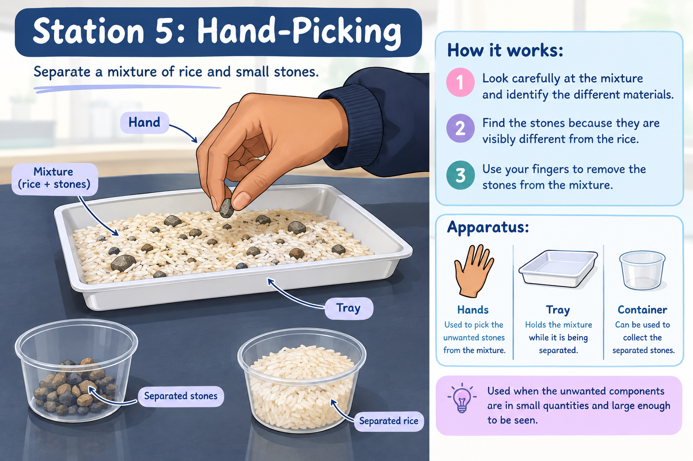
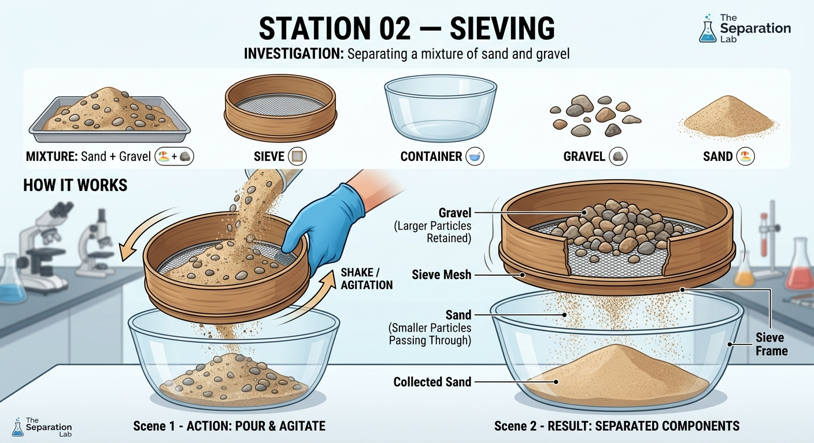
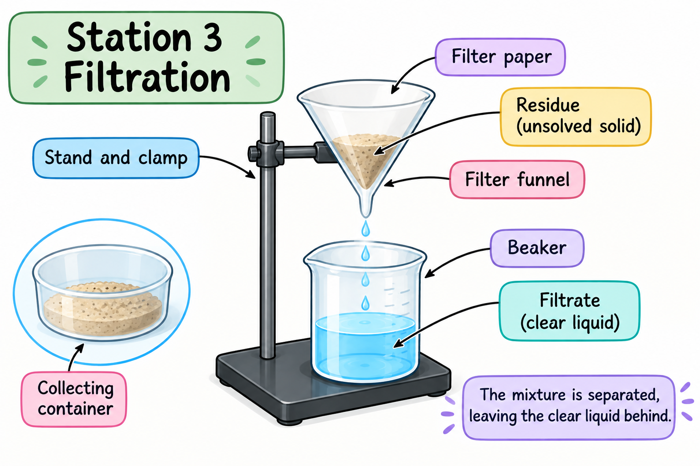
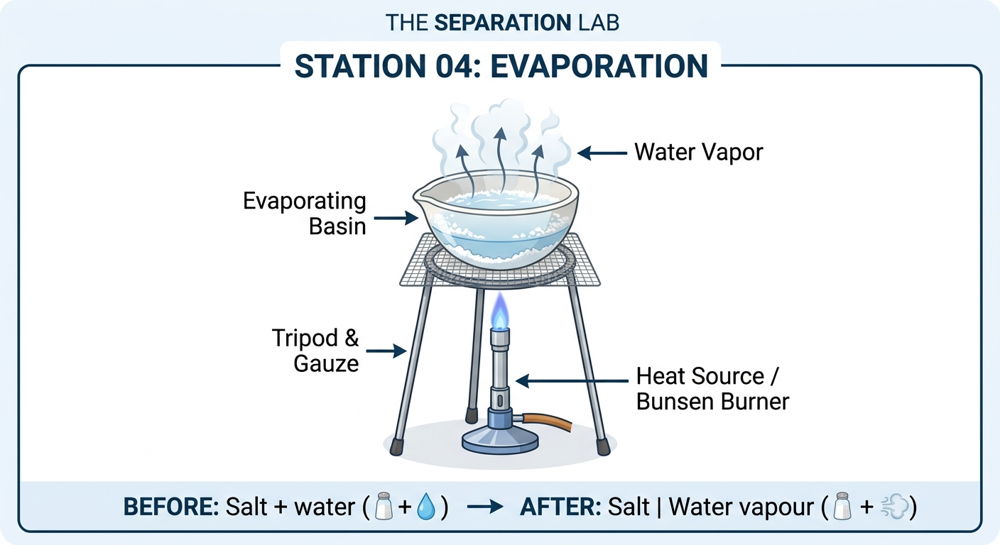
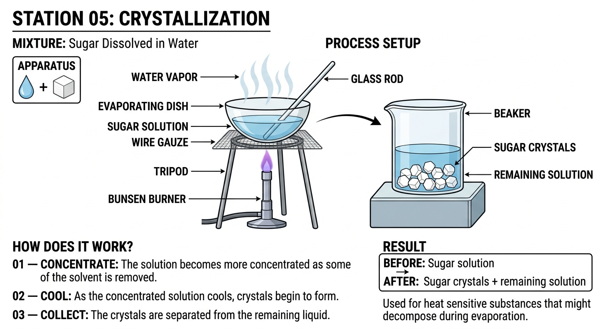
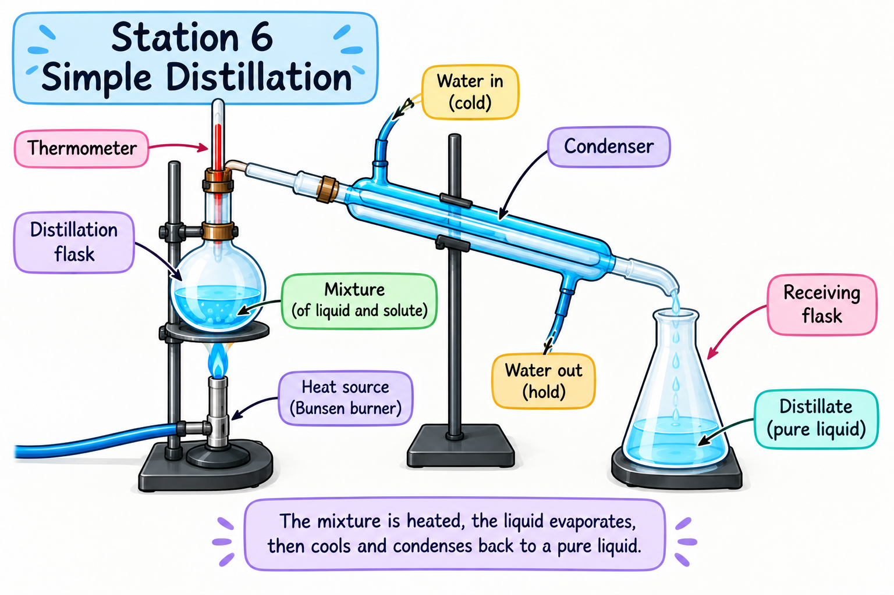
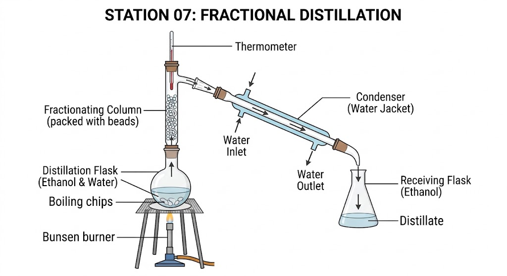
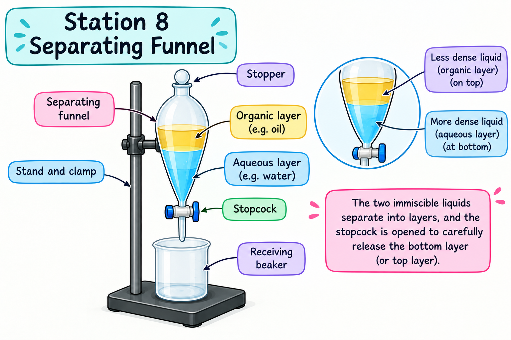
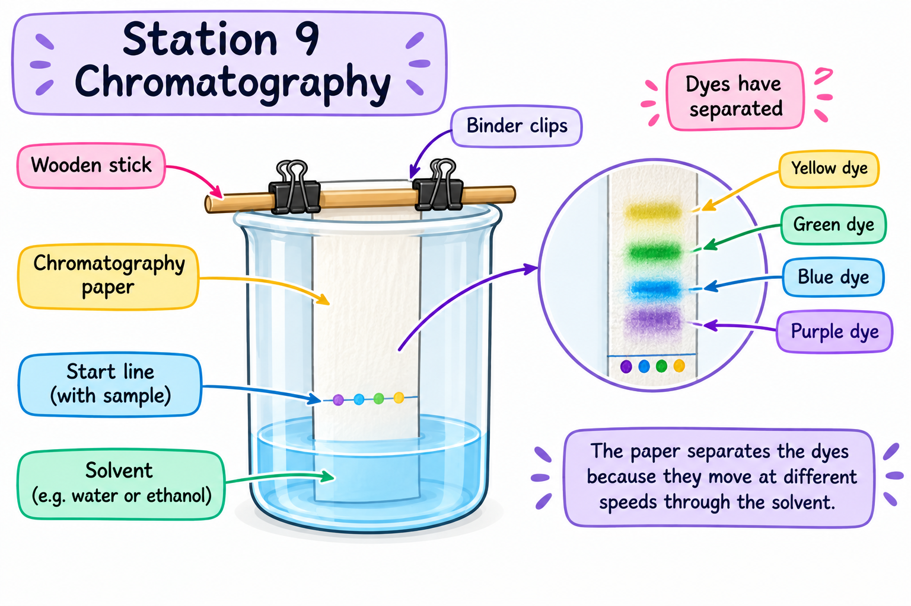
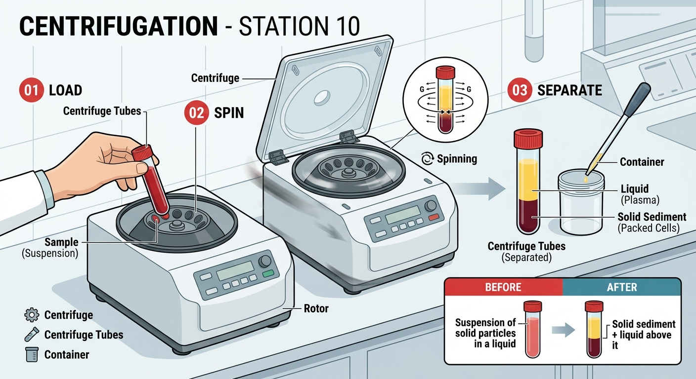

Welcome to the laboratory. Your mission is to master 10 separation techniques.
Select a separation technique to begin your investigation.
Separate a mixture of rice and small stones.
Hand-picking is a separation technique used to remove visible solid particles from a mixture by using your hands.
Rice + small stones
Look carefully at the mixture and identify the different materials.
Find the stones because they are visibly different from the rice.
Use your fingers to remove the stones from the mixture.
Used to pick the unwanted stones from the mixture.
Holds the mixture while it is being separated.
Can be used to collect the separated stones.
used when the unwanted components are in small quantities and large enough to be seen.

Rice + stones
Rice | Stones
The rice and stones have been separated into their individual components without changing their identities.
Which method should you use to separate rice and small stones?
You successfully separated the rice and stones using hand-picking.
Separation technique mastered: HAND-PICKING
Separate a mixture of sand and gravel.
Sieving is a technique used to remove smaller Solid particles from larger particles
Sand + gravel
Place the mixture into a sieve with suitable-sized holes.
Shake the sieve so the smaller sand particles pass through the holes.
The larger gravel particles remain in the sieve while the sand falls through.
Allows smaller particles to pass through while retaining larger particles.
Collects the material that passes through the sieve.
The larger particles remain on the sieve.
The sieve separates the mixture based on particle size.

Sand + gravel
Sand | Gravel
The smaller sand particles pass through the holes of the sieve, while the larger gravel particles remain behind.
Which method should you use to separate sand and gravel?
You successfully separated the sand and gravel using sieving.
Separation technique mastered: SIEVING
Separate a mixture of sand and water.
Filtration is a technique used to separate Solid particles from a liquid or gas by passing through tiny holes or barriers
Sand + water
Pour the sand and water mixture into a filter funnel containing filter paper.
The water passes through the tiny pores in the filter paper while the sand is trapped.
The water collects in the container below, while the sand remains on the filter paper.
Holds the filter paper and directs the liquid into the container.
Traps the insoluble sand while allowing the water to pass through.
Collects the water that passes through the filter paper.
Filtration separates an insoluble solid from a liquid.

Sand + water
Sand | Water
The sand is trapped by the filter paper, while the water passes through and is collected in the container below.
Which method should you use to separate sand and water?
You successfully separated the sand and water using filtration.
Separation technique mastered: FILTRATION
Separate salt from salt water.
Evaporation is technique used to separate a dissolved solid from a liquid using heat until turned into a gas
Salt + water
Heat the salt solution so that the water begins to evaporate.
The water changes from a liquid into water vapour and leaves the solution.
The salt does not evaporate under these conditions, so it remains behind.
Holds the salt solution while the water evaporates.
Provides heat energy to speed up evaporation.
Supports the evaporating basin above the heat source.
Evaporation is used to recover a dissolved solid from a solution.

Salt + water
Salt | Water vapour
The water evaporates and leaves the solution, while the dissolved salt remains behind in the evaporating basin.
Which method should you use to separate salt from salt water when you want to recover the salt?
You successfully recovered the salt from the salt solution using evaporation.
Separation technique mastered: EVAPORATION
Crystallization is a technique that is used to separate a dissolved solid from a solution by forming solid crystals.
Sugar dissolved in water
The solution becomes more concentrated as some of the solvent is removed.
As the concentrated solution cools, crystals begin to form.
The crystals are separated from the remaining liquid.
Holds the solution while it becomes concentrated.
Can hold the solution during the crystallization process.
Used to stir the solution when appropriate.

Sugar solution
Sugar crystals + remaining solution
Used for heat sensitive substances that might decompose during evaporation.
Which technique is used to obtain crystals
of a dissolved solid?
You successfully obtained crystals
from the solution.
Separation technique mastered:
CRYSTALLIZATION
MISSION
MISSION COMPLETE
Simple distillation separates a solvent from a solution by using differences in boiling points.
Salt dissolved in water
The solution is heated and the liquid with the lower boiling point changes into a vapour.
The vapour passes into a cooler part of the apparatus and condenses back into a liquid.
The condensed liquid is collected separately from the substance that remains behind.
Holds the mixture being separated.
Measures the temperature of the vapour.
Cools the vapour so that it condenses into a liquid.

Salt solution
Water collected + salt remains behind
Which technique can be used to obtain water from a salt solution?
Fractional distillation is a technique used to separate a mixture of liquids with different boiling points.
Two miscible liquids with different boiling points
The mixture is heated and the liquids begin to form vapour at different temperatures.
The vapours pass through a fractionating column, allowing repeated vaporisation and condensation.
The liquid with the lower boiling point is collected before the liquid with the higher boiling point.
Holds the mixture being separated.
Provides surfaces for repeated vaporisation and condensation.
Cools vapour and changes it back into a liquid.

Mixture of miscible liquids
Liquids collected separately
Used for crude oil refining or liquid air separation.
Which technique is used to separate miscible liquids with different boiling points?
Separating funnel is a technique used to separate two immiscible liquids that do not mix.
Two immiscible liquids with different densities
The mixture is left undisturbed so the two liquids form separate layers.
The denser liquid at the bottom is allowed to flow out through the tap.
The liquids are collected separately.
Holds the two immiscible liquids and allows them to be separated.
Controls the flow of the liquid from the separating funnel.
Collects the liquid flowing from the funnel.

Two immiscible liquids
Liquids separated into different containers
Used for oil and water mixtures.
Which technique is used to separate two immiscible liquids?
Chromatography is a technique used to separate and identify different substances in a mixture into individual parts.
Different dyes or pigments in a coloured ink
A small spot of the mixture is placed near the bottom of the paper.
The solvent moves up the paper and carries the substances with it.
Different substances travel different distances, forming separate spots.
Provides the surface on which the substances separate.
Moves up the paper and carries the substances in the mixture.
Holds the solvent and chromatography paper.

Mixture of different dyes
Separate coloured spots
Used for dyes, ink and amino inks.
Which technique can be used to separate the different dyes present in ink?
Centrifugation is a technique used to separate substances based on differences in density by spinning a mixture rapidly.
Solid particles suspended in a liquid
The mixture is placed into tubes inside the centrifuge.
The centrifuge spins rapidly, causing denser particles to move outward and settle.
The denser solid forms a sediment while the liquid remains above it.
Spins the mixture rapidly to separate substances according to density.
Hold the mixture while it is being spun.
Holds the separated material after centrifugation.

Suspension of solid particles in a liquid
Solid sediment + liquid above it
Used for blood separation and laboratories.
Which technique uses rapid spinning to separate substances based on density?